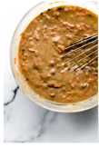
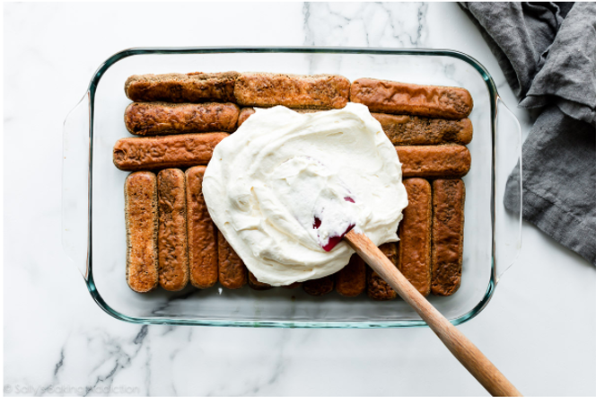
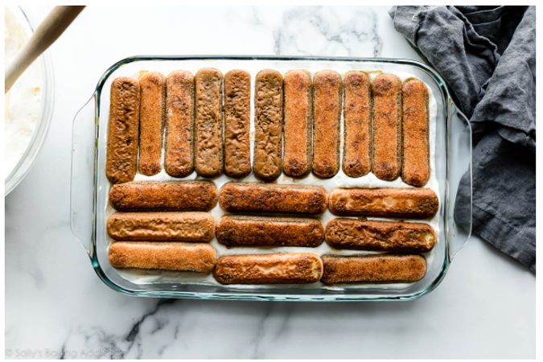
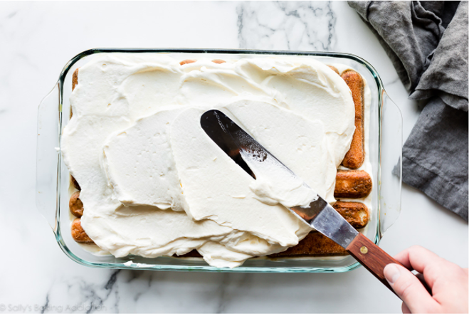
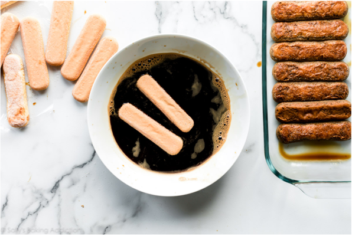

My favourite Carrot Cake RecipePublished at: , 11.12.2022 / Author: Adhuron Pllana |
|||
|  |  |  |  |
|
Tiramisu is the legendary mystical dessert that can turn a relatively normal person into a simpering love slave with just one bite. Not for the faint of heart, this tiramisu recipe is just as epic as you could imagine, and requires no baking whatsoever. Perfect for any time of year! I entrust you with this recipe, knowing that you will use it wisely and carefully. When I worked in an Italian family restaurant in the North End of Boston, I remember the owner, Arturo, coming in to make his famous tiramisu for the week. The first thing he did was soak the ladyfingers in espresso and amaretto and let them sit before going to work on the perfect custard. He also knew that a real tiramisu needed at least 24 hours to come together, and was even better after a few days. Any less time didn't allow the flavors to mingle enough to give the dessert the legendary taste and texture it's known for. Ingredients
Before this, I was certain there was no way to recreate a proper Italian tiramisu at home, but after watching Arturo go to work, I realized it's not as mystical as it seems! You too can have tiramisu without having to track down your nearest authentic Italian eatery. Just be careful - I've already warned you of its effects. Common Tiramisy Questions- Answered |
|||